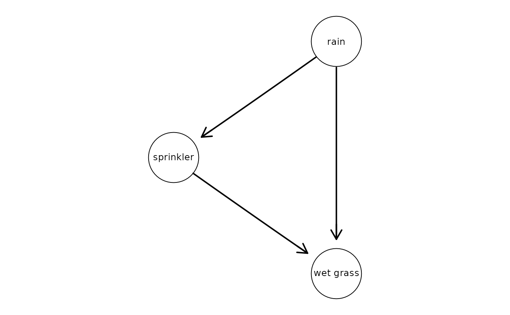
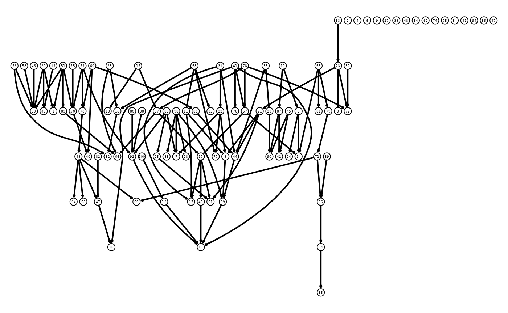

SubGroupSeparation.RmdBayesian networks are a fundamental tool in the world of machine learning and statistics and have recently gained popularity as a common model for causality. Here, we discuss efficient methods for inference in Bayesian networks and discuss how they can be applied to missing data problems.
Inference describes the calculation of the marginal probability \(P(v'|e)\) of a fraction of variables \(v' \in V\) conditioned on a (typically observed) fraction of variables \(e\). As an example, we might be interested in the probability that it rained given that the grass is wet, where \(v':=rain\) and \(e:=wet\ grass\). A corresponiding directed acyclic graph (DAG) might look as follows:
# create random BN and label variables
set.seed(6)
myBayesNet <- randomBN(3)
myBayesNet@variables <- c("rain", "sprinkler", "wet grass")
plot(myBayesNet)
What is the probability that it rained?
# define observed variables and calculate the probability
myObserved <- list(observed.vars=c("rain"), observed.vals=c(2))
exactInference(myBayesNet,myObserved)
#> [1] 0.6645466With marginal probability we mean calculating the probability of multiple variables, e.g. rain and wet grass. What’s the probability of having rain and wet grass at the same time?
# define observed variables and calculate the marginal probability
myObserved <- list(observed.vars=c("rain", "wet grass"), observed.vals=c(2,2))
exactInference(myBayesNet,myObserved)
#> [1] 0.4193774Instead of simulating a Bayesian network, we can also learn it from data. In the following example, we learn a the Bayesian network from the well-known “Asia dataset” and subsequently perform inference on that.
# let's learn the Bayesian network from the "Asia dataset"
asia_bn <- learn_bn(Asia)
#> maximum parent set size is 2
#> core space defined, score table are being computed
#> score tables completed, iterative MCMC is running
#> search space expansion 2
plot_bn(asia_bn)
# now we can do the inference on the learned Bayesian network
myObserved <- list(observed.vars=c("X", "D"), observed.vals=c(1,1))
exactInference(asia_bn, myObserved)
#> [1] 0.49438Next, let’s consider a more high-dimensional problem. Assume, we have measured 100 genes and would like to know what the probability of 4 particular genes is. We will use both exact and approximate inference to get the marginal probability distribution. For approximate inference, we use the efficient SGS algorithm (default) and the famous loopy belief propagation algorithm as a reference.

# what's the probability of having rain and wet grass at the same time?
# define observed variables and calculate marginal probability
myObserved <- list(observed.vars=c(49,40,44,47), observed.vals=c(2,1,2,1))
exactInference(myBayesNet,myObserved)
#> [1] 0.05815955
approxInference(myBayesNet,myObserved)
#> [1] 0.05759497